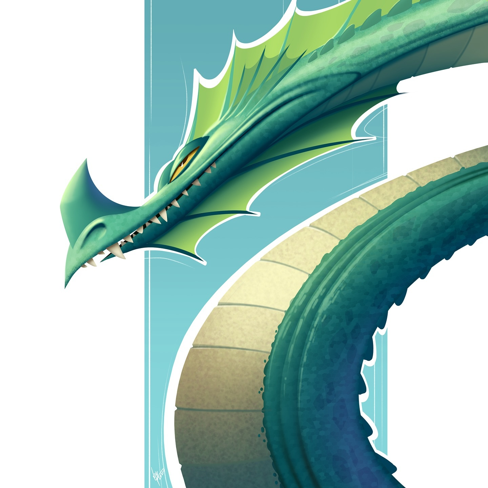
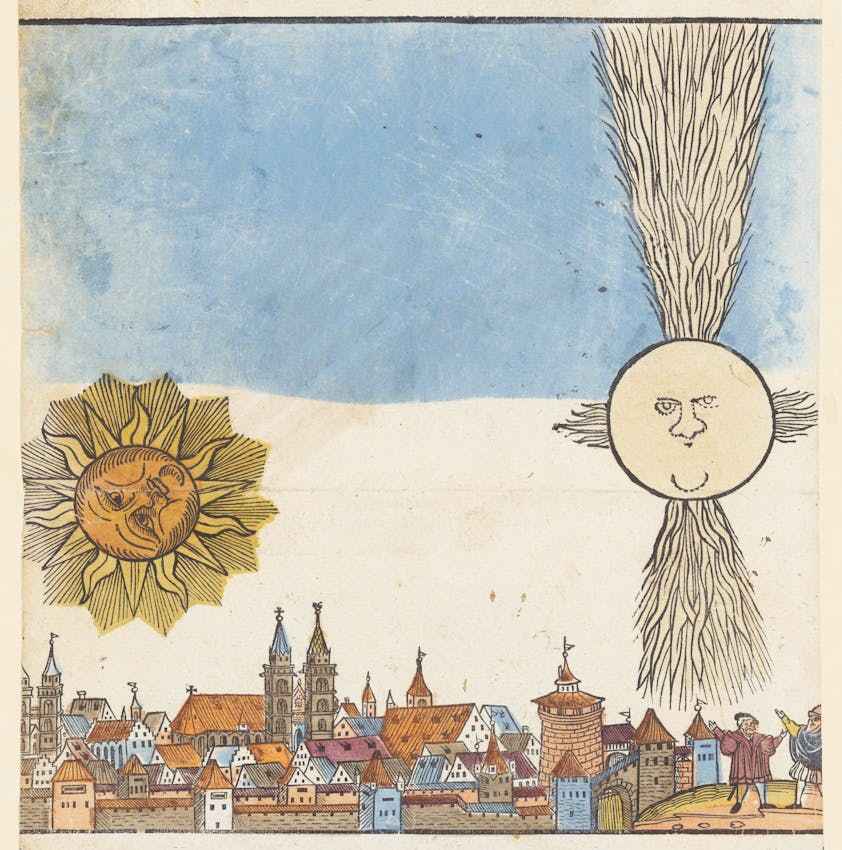
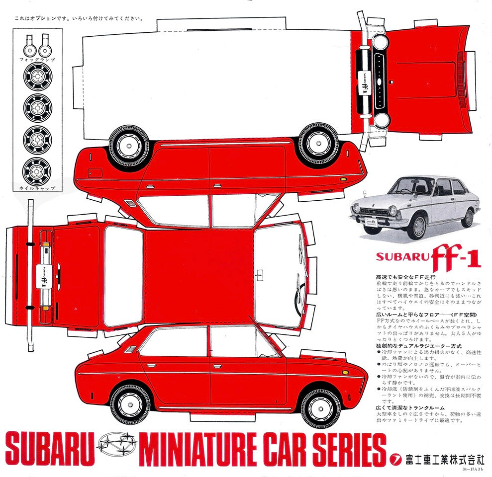

week 2 of 2025

Eran Alboher creates these amazing stylized character designs. Love the geometric styling and smooth attitude.
color stuff
Lots of web color stuff this week even though I didn’t seek it out specifically. I need to update my Color and Tools page with these new finds…
It is time to learn OKLCH color teaches you why this new way of specifying digital color is so good, primarily because it is so vast, easy to use, and based on how humans perceive color.
Colorspace is a neat interactive color generation tool that allows you to create analogous color schemes. Tons of fun eye candy that seems more visually interesting than functional. Still, kind of fun to play with just to see what happens.
Every Hex Codes has every single one of the colors in the 16.7 million possibilities available in hexadecimal. Can search sequentially or generate randomly.
Gradientor is a neat interactive tool to generate radial gradient codes. Move the mouse around the screen to move the center of the gradient and scroll to change size. Randomly generated options include Pastel, Vivid, and Monochromatic options.
Finally, IntoTime is a weird interactive color thing that isn’t functionally useful beyond just being fun to play around with. Basically the page is a background gradient cycling through colors. Click somewhere and the page gets cut in half with different cycling gradients. Click again and another section gets cut in half. Keep going as far as you want. That seems to be about all it does.
visual oddities
The Collections page of the Public Domain Review is full of all kinds of neat things like vintage pictures of snowmen or art showing people from behind. Fun to wander through the ephemera of history but also functional for artists since all the works are part of the public domain. Perfect visually interesting source material for collage or digital manipulation.

I love this image from a collection of Celestial Phenomena in 16th-Century Germany.
Cut & Make from Present & Correct has a series of printable graphics that allow you to assemble paper versions of old Subaru vehicles. Completely unrelated, but they also have a list of 251 words you can spell with a calculator, so there’s that.

Fun graphic design for the whole page as well as the actual illustration.
neat web tools
Radiocast streams music from stations across the planet using a map interface. You can filter by music type and mood. Reminds me a lot of Radio Garden which does something similar only with many more stations available.
Tiny Tools Directory is a filtered collection of open source software tools for web and app design, visual expression, coding, writing, and all sorts of creative endeavors.
Awesome Open Source Mac Apps is a filtered collection of open source software for your Mac. I found several new tools to install. Happy to see that several other apps I already used were on the list.
inspiration (or not)
100 Of The Best Book Covers of 2024 is a collection of quality graphic design from the past year.
Websites From Hell is a curated collection of the most horrible web design around. Definitely worth seeing what shouldn’t be done when it comes to building a website.
A great find from The Marginalian on the joys of a hot shower…
O God help me bless my soul is there any pleasure quite so artless and glorious and simple and unadorned and productive and restorative as a blazing hot shower when you really really want a hot shower? When you are not yet fully awake, when you are wiped from two hours of serious basketball, when you are weary and speechless after trip or trauma? Thank You, Inventiveness, for making a universe where there is water, and heat, and nozzles, and towels, and steam, and hairbrushes, and razors for cutting that line that distinguishes your beard from your chest, and toothbrushes. Thank You most of all, Generosity, for water. Deft invention, water. Who would have ever thought to mix hydrogen and oxygen so profligately? Not us. But it is everything we are. It falls freely from the sky. It carries us and our toys and joys. It is clouds and mist and fog and sleet and breath. There is no sweeter more crucial food… And so: amen.
— Brian Doyle, A book of uncommon prayer : 100 celebrations of the miracle & muddle of the ordinary